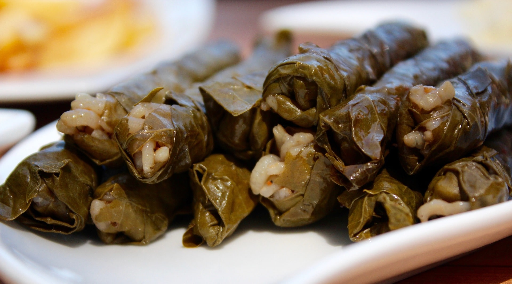

Sarma - Stuffed Grape Leaves
Stuffed Leaves with Olive Oil Recipe ( Turkish Sarma Recipe )is one of the most popular recipes that can be eaten at any time of the day, from feast meals to golden days.
What you need:
| Amount | Ingredients |
|---|---|
| 300 gram | grape leaves |
| 1 | lemon |
| 4 tablespoons | of olive oil |
| 1 cup | hot water |
| For internal mortar: | |
| 1/2 cup | olive oil |
| 3 medium sized | onions |
| 1.5 cups | rice |
| 1 cup | hot water |
| 1 cup | hot water |
| 1 tablespoon | peanuts |
| 1 tablespoon | currant |
| 1 teaspoon | salt |
| 1 teaspoon | black pepper |
| 1 teaspoon | mint |
| 1 teaspoon | spice |
| 1/2 teaspoon | cinnamon |
Steps
- To prepare the Stuffed Leaves ( Sarma ) ; Heat half a glass of olive oil in a large-bottomed pan. Fry the 3 grated onions until they turn lightly colored. Then add 1.5 tablespoons of peanuts on it and continue roasting.
- Fry the 1.5 cups of rice, which you have drained for 5 minutes in warm water, together with the onions, until the rice becomes transparent.
- Then respectively; Add 1 tablespoon of currants, 1 teaspoon each of salt, black pepper, allspice and cinnamon and mix.
- Add approximately 1 glass of hot water and cook the filling on low heat for 5 minutes, then remove from the stove.
- Spread the pickled vine leaves on the counter so that the veined parts remain on top. In the middle of each leaf; Prepare it and share it with a dessert spoon each of the stuffing that you have warmed.
- Take the edges in and move from the wide part to the tip.
- Cover the bottom of the wrapping pot with a few grape leaves.
- Place the wraps you have prepared, in rows, side by side. After slicing the lemon into rings, place it on the wraps.
- In order not to open during cooking; Cover them with a flat serving plate. Add 1.5 cups of hot water and 2 tablespoons of olive oil to the pot and cook the wraps over low heat for about 35 minutes.
- According to desire; Serve it warm or cold.